2020年7月3日に実装した地上用の乗り物です
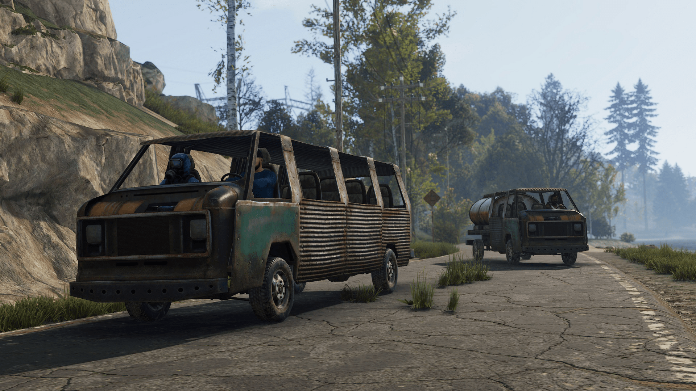どこにあるの？
4500サイズのマップに対して約60台が環状道路の近くにスポーンします
すぐに動かせるの？
すぐには動かせません。動かすには「エンジンの修理※完全に壊れている場合 」「燃料」「エンジン部品」の3種類が必要となります
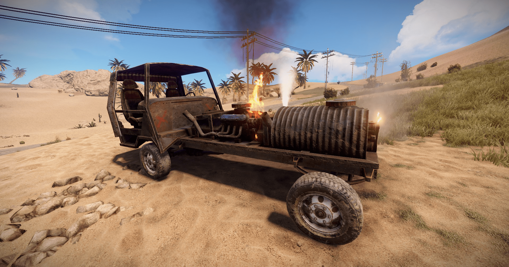修復には何が必要なの？
ツールである「ハンマー」もしくは「Garry's Mod ツールガン」で通常は「上質な金属 」、 「金属片 」、「木 」が必要となります
燃料は何が必要なの？
おなじみの「低質燃料 」が必要となり、燃焼効率はエンジン部品の品質によって変化します
エンジン部品って何が必要なの？
エンジン部品は「キャブレター」「クランクシャフト」 「ピストン」「点火プラグ」「バルブ」 の各5種類で最低1つずつが必要となります エンジン性能は上から
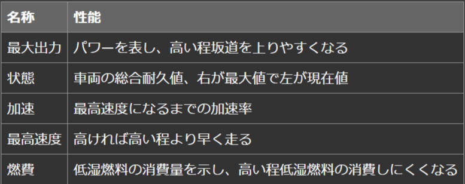 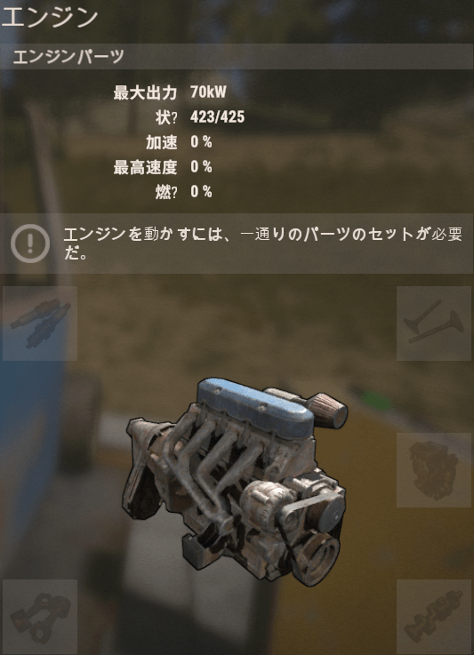エンジン部品はどれも同じ？
エンジン部品は「低品質」「中品質」「高品質」の3段階で分かれています
・低品質 は「ジャンクの山」や「道端のモニュメント」の「赤いツールボックス」にて入手可能
・ 中品質は「バンディットキャンプ」。高品質は「前哨基地」で購入可能
・またすべてのエンジン部品はリサーチ&レシピ化することができます
↓ 各エンジンパーツの性能
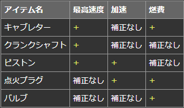↓リサーチ
↓レシピ

運転するにはどうするの？
車両の近くに「Eキー 」で乗ることができます。運転は「WASDキー」で操作することができ、 「スペースキー」で降りれます 車両が転倒した時は「プッシュ 」で動かせます 「 左クリック」でクラクションが鳴ります
車両はカスタマイズできるの？
電気アイテム「モジュラー車両押上機 」を使用することにより車両のカスタマイズをすることができます
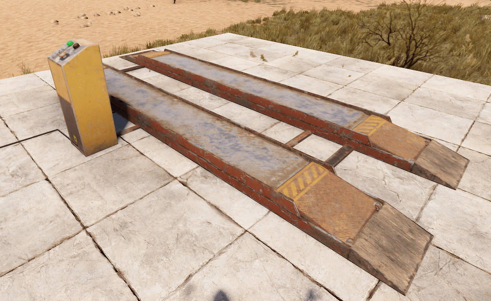 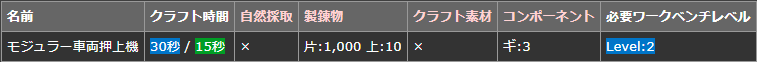 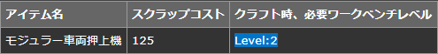カスタマイズできる数って決まってるの？
車の基礎である車台(シャーシ)によって違い、小さいシャーシで2ソケット、中ぐらいのシャシーで3ソケット、大きいシャシーで4ソケットあります
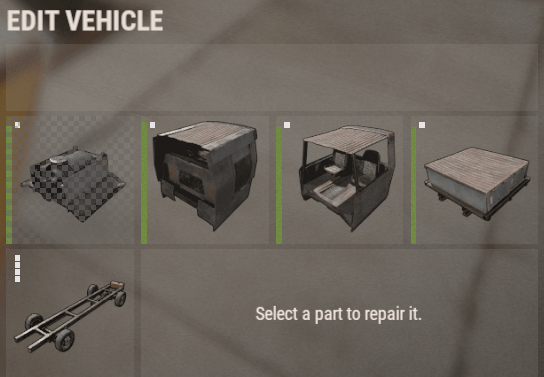カスタマイズできる物ってなに？
カスタマイズできる物を「モジュール」といい、現段階では全部で10種類存在し、モジュールによってシャシーに取り付けるソケット数、用途などが様々あります。 モジュールはLootスポーンはせず、道端にランダムでスポーンしている車両から拠点に持ち帰り→モジュラー車両押上機に乗せて→入手→レシピ化 する必要があります
| アイコン | 車両モジュール | 詳細 |
|---|---|---|
 |
コックピット車両モジュール | 運転席と助手席を備えた基本モジュールだが、これ単一では動かせない |
| 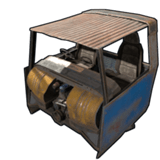 | エンジン付きコックピット車両モジュール | 運転席と助手席、小型エンジンを備えたモジュール |
| 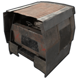 | 装甲コックピット車両モジュール | 通常のコックピットよりも遮蔽物が多く、運転手と乗客を保護します。さらに窓には上下に動くようになっています |
| 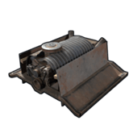 | エンジン車両モジュール | ピストン、点火プラグ、バルブのスロットを2つ備えたエンジンで高品質なエンジン部品をセットすることにより小型エンジンよりもパワーと最高速度を出します |
| 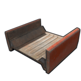 | 短い平台車両モジュール | 無作為にプレイヤーを運搬できるモジュール |
| 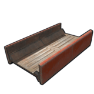 | 長い平台車両モジュール | シングルよりも長い為、より多くのプレイヤーを運搬することができる |
| 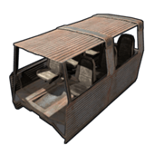 | 乗用車モジュール | 6人分の座席を備えたモジュール |
| 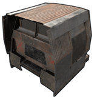 | 装甲乗用車モジュール | 装甲を備えた2人分の座席モジュール |
| 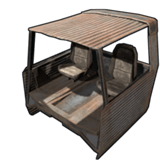 | 後部座席車両モジュール | 2人分の座席を備えたモジュール |
| 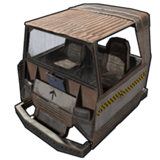 | タクシー車両モジュール | 普通の乗用車モジュールと違って、フロントにガラスで保護されており、 中心にはトレードができる機構が備わっている。車のカギをかけてもこのモジュールは鍵がかからない |
| 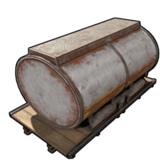 | 燃料タンク車両モジュール | 液体を運搬できるモジュール。※現時点では水しか運べない |
| 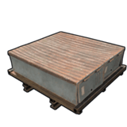 | 保管車両モジュール | 通常のボックスと同じで最大18スロットの保管スペースを有している |
・また各モジュールはリサーチ&レシピ化することができます
↓リサーチ
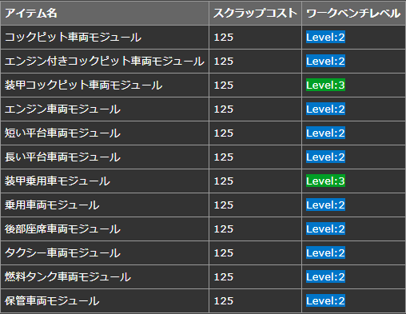↓レシピ
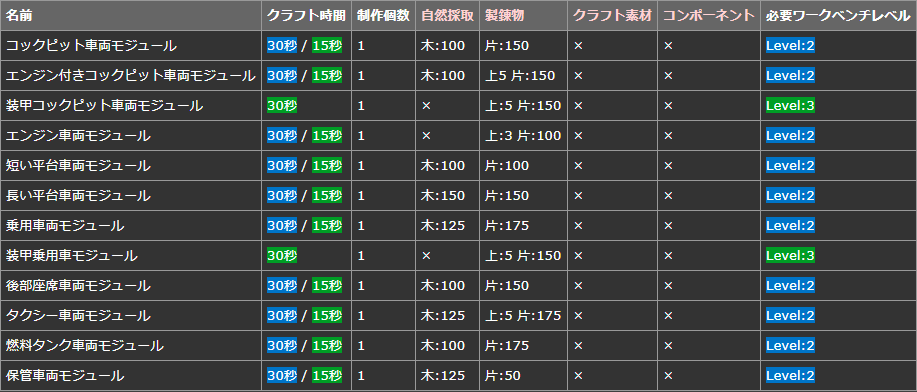車のカギのかけ方は？
①まず車両を「 モジュラー車両押上機」に乗せて、車両カスタマイズの画面を開きます
②メニューの右下に車に鍵が付いていなければ、だれでもアクセスができる状態なので「ロックを追加」で75個の金属片を消費して「 車のカギ」が作成されます
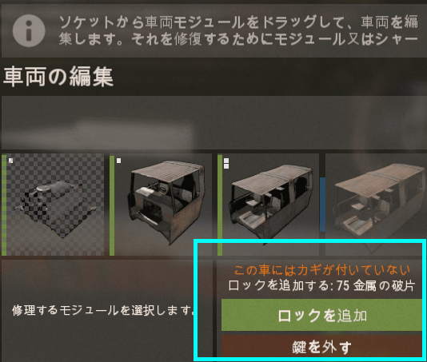③車のカギは「IDによって管理される為、IDが一致する車両しか開けることができません 」。また各カギにメモを記入することができます
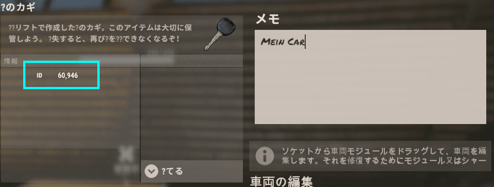④車両のIDを確認する方法は「モジュラー車両押上機 」に乗せて、車両カスタマイズの画面を開きます。そうすると 「この車にはカギが付いている ID:○○○○ 」と記載されているのでそのIDを一致するカギで開けれます
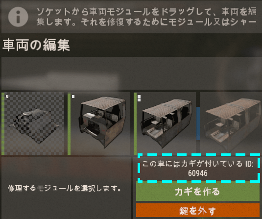⑤逆にカギを外す場合は「鍵を外す」を選択すればその車両はカギが不要になります
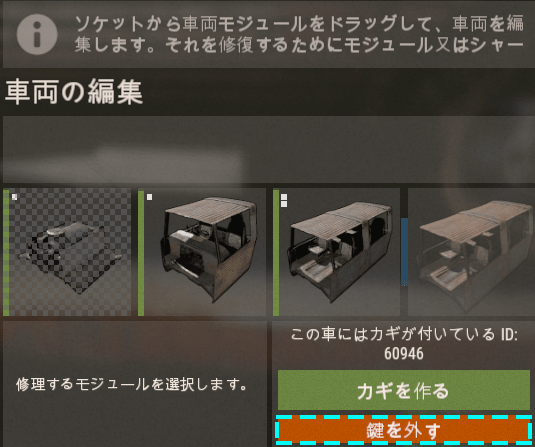⑥カギがある車両の場合、運転席の右下に車をロックする機能があるので設定すると、車のカギをかけて外から入れないようにできます
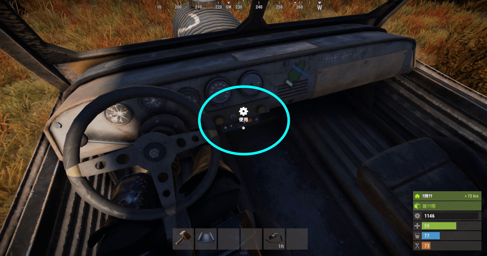⑦カギがかかってる場合でも運転席のモジュール耐久が一定値以下になると破壊されるので注意
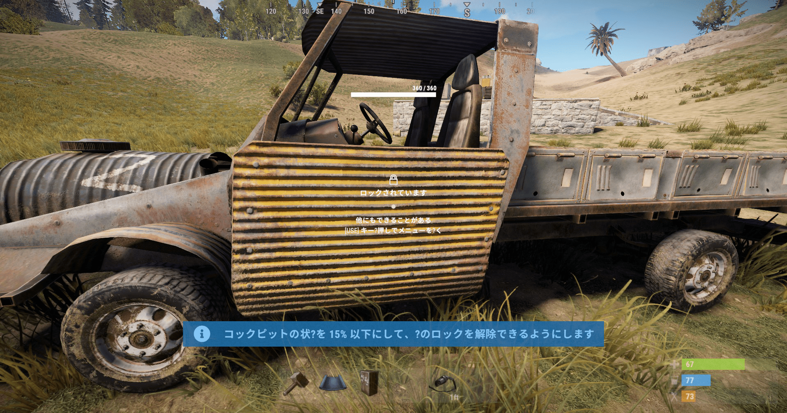風化時間は？
通常は216分ですが、工具棚の範囲内であれば、約10倍 になります
その他
保管車両モジュールにカギってかけれるの？
車のカギを作成いれば、カギをかけたときに一緒に保管車両もカギがかかります
エンジンって複数乗せれる？性能って変わる？同じ性能値のエンジンの場合は倍増とかはされません
人へのダメージってどれぐらい？速度によって変わりますが、最高速度であればほぼ即死です
平台って何人でも乗れる？ギリギリまで乗ることができます
モジュラー車両押上機から車両が下がらないエンジンもしくは運転席のモジュールがないと下がりません
低品質と高品質のエンジンパーツを混合して使える？使えます
ドアやゲートの前に車両を置くと開けれなくなる？開けられなくなります
シャーシって壊せるの？モジュラー車両押上機に車両を乗せてすべてのモジュールを外すと「破壊」という項目が現れてカウントダウンの後に破壊できます